DSH 主题皮肤包 · 16 套
11 色系 × 明暗变体 = 16 套：Catppuccin / Gruvbox / Everforest / Rosé Pine / Solarized / 神奈川 / 东京夜 / 夜猫子 / Nord / Dracula / One Dark
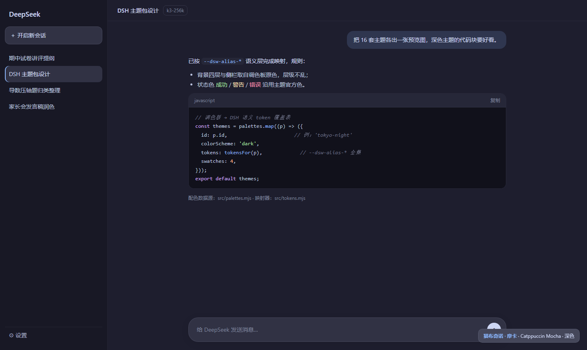
猫布奇诺 · 摩卡catppuccin-mocha
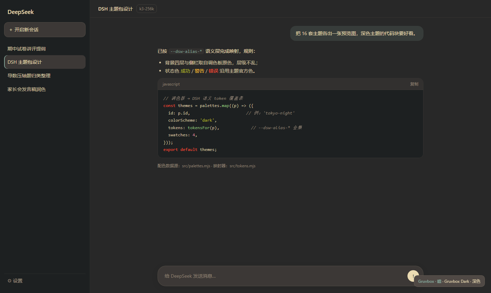
Gruvbox · 暗gruvbox-dark
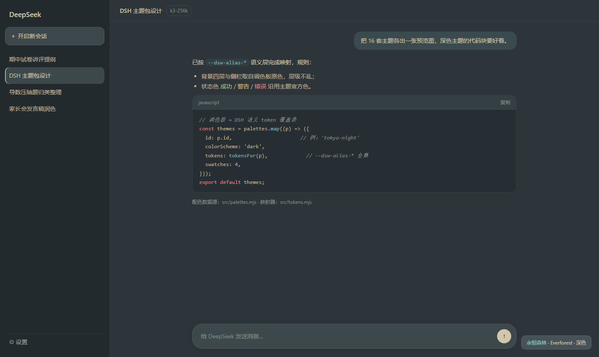
永恒森林everforest
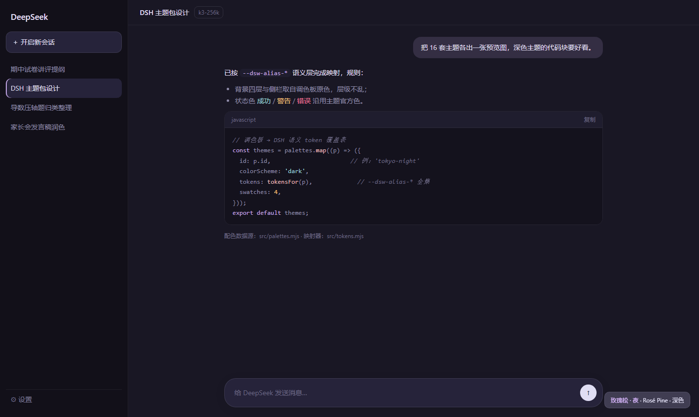
玫瑰松 · 夜rose-pine
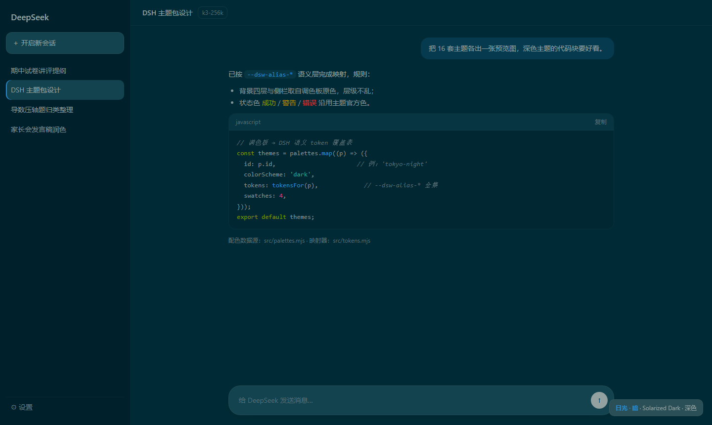
日光 · 暗solarized-dark
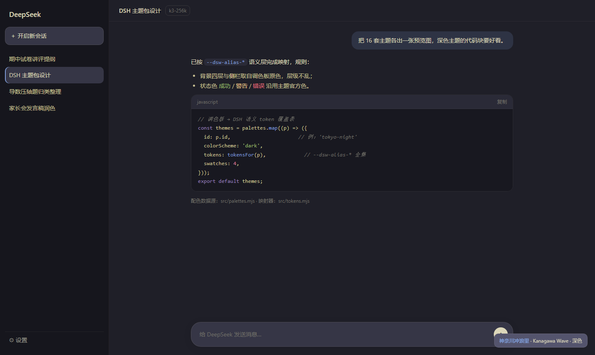
神奈川冲浪里kanagawa
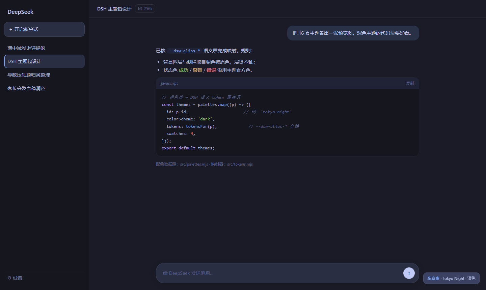
东京夜tokyo-night
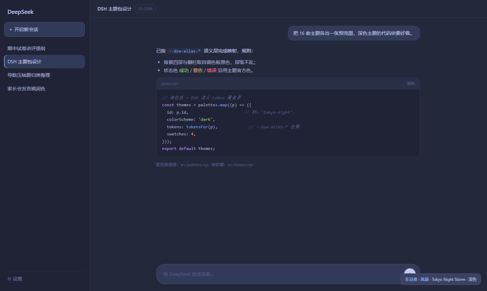
东京夜 · 风暴tokyo-storm
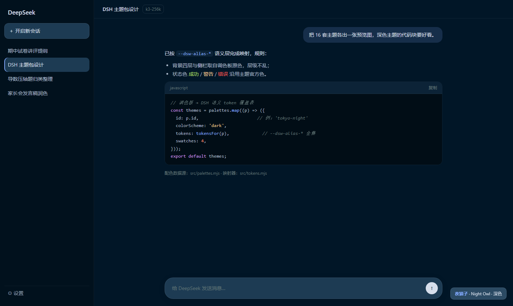
夜猫子night-owl
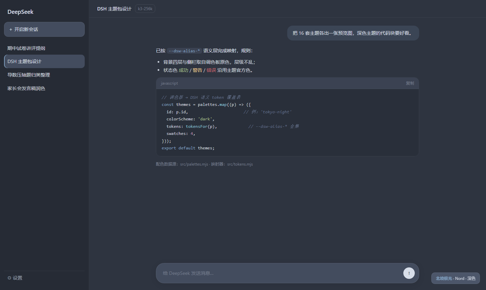
北境极光nord
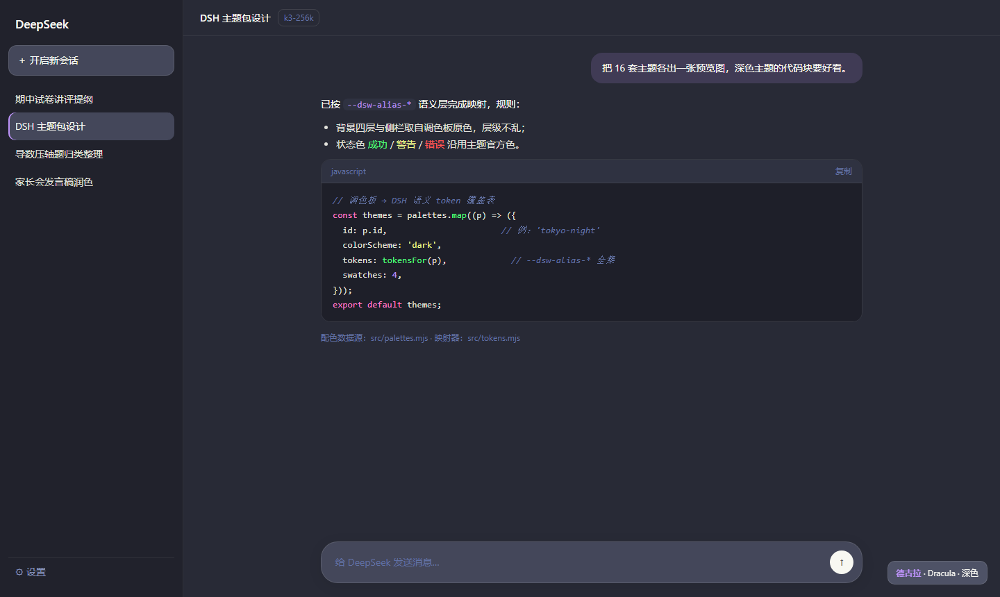
德古拉dracula
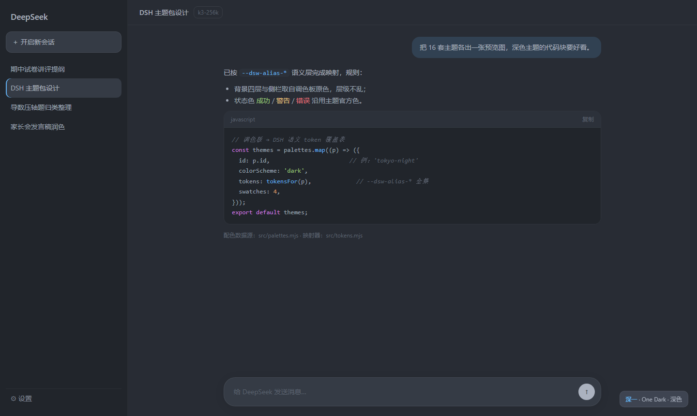
深一one-dark
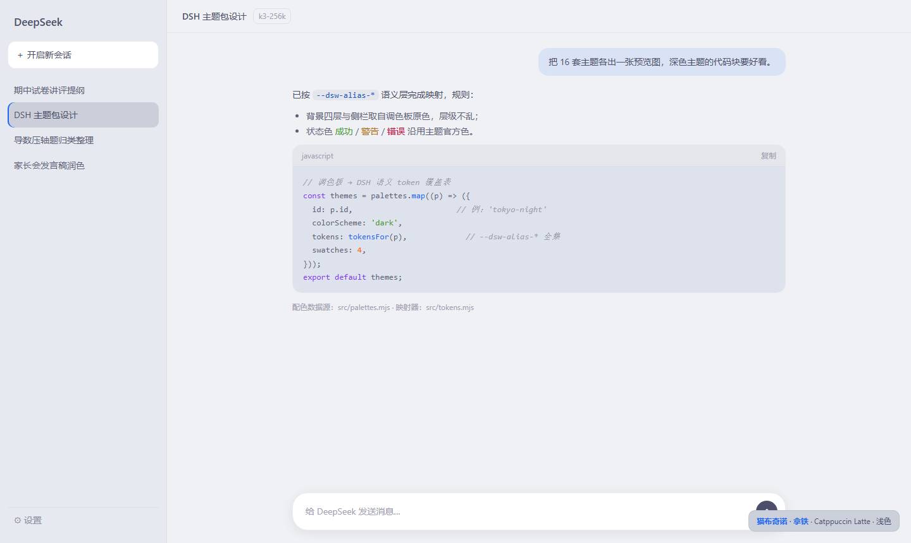
猫布奇诺 · 拿铁catppuccin-latte
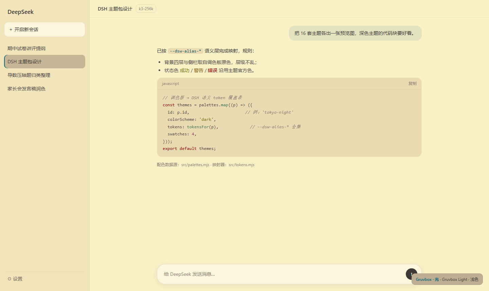
Gruvbox · 光gruvbox-light
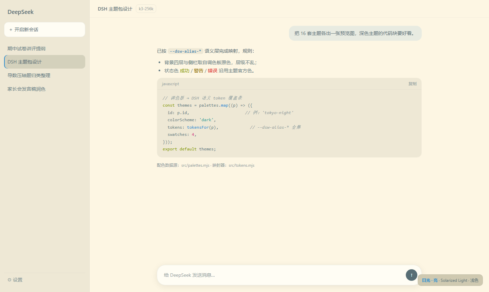
日光 · 亮solarized-light
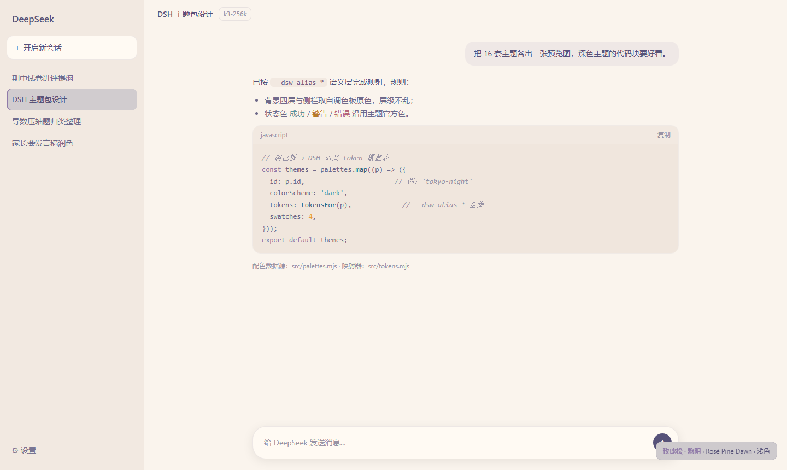
玫瑰松 · 黎明rose-pine-dawn